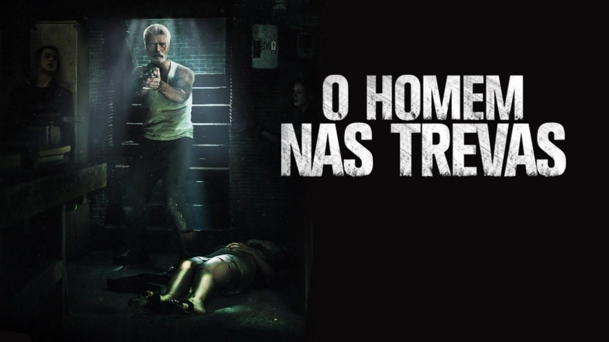
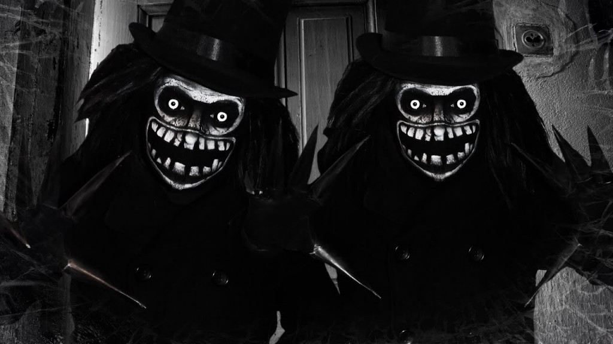
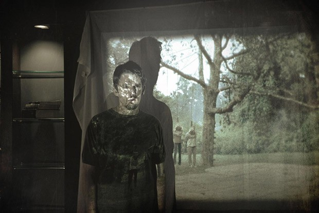
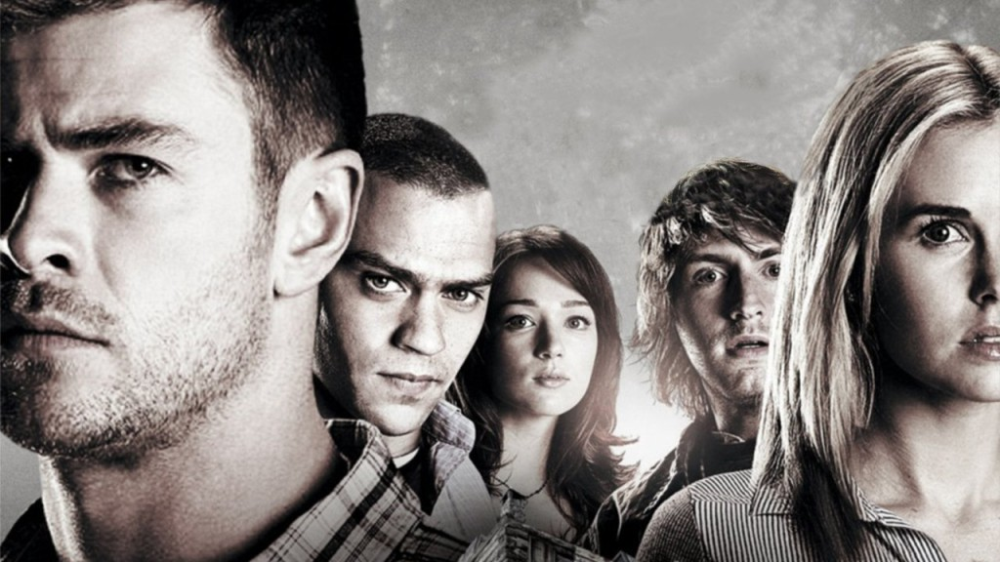
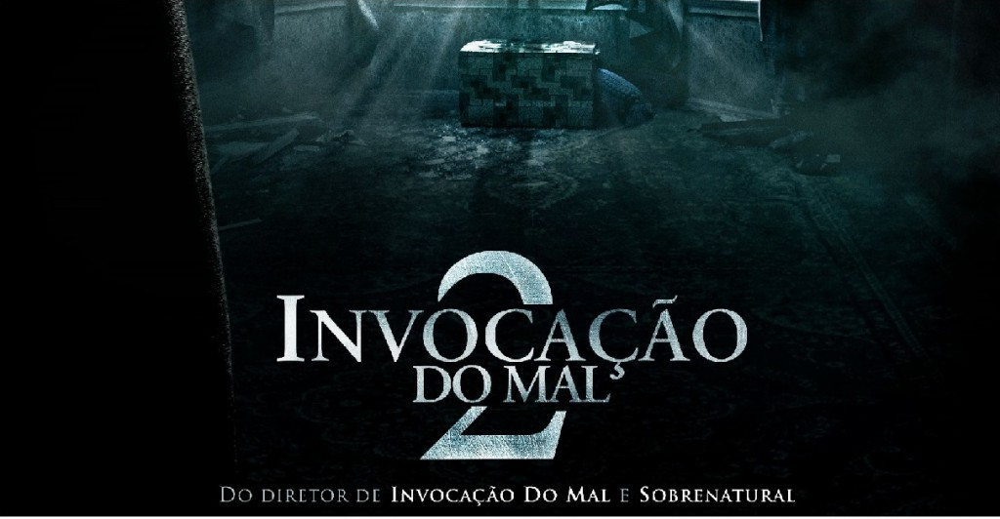
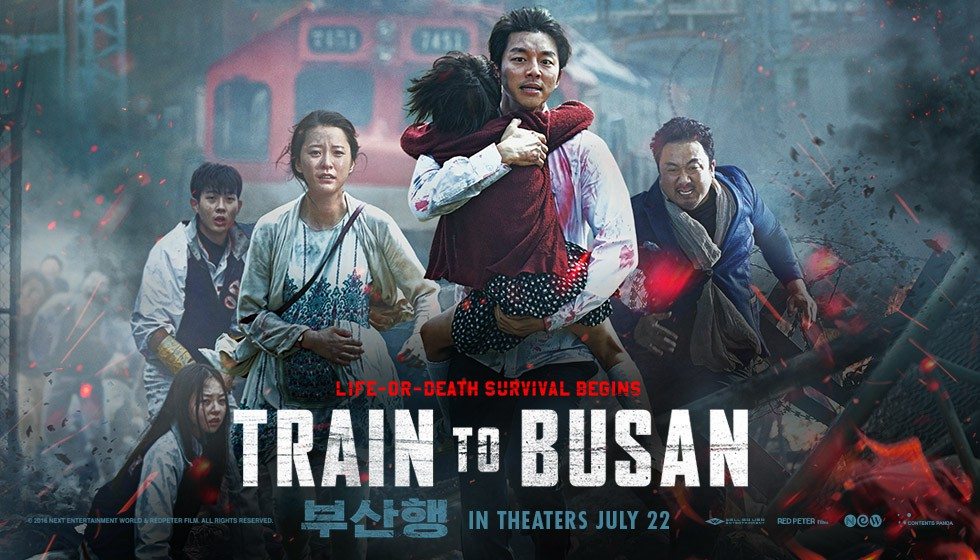
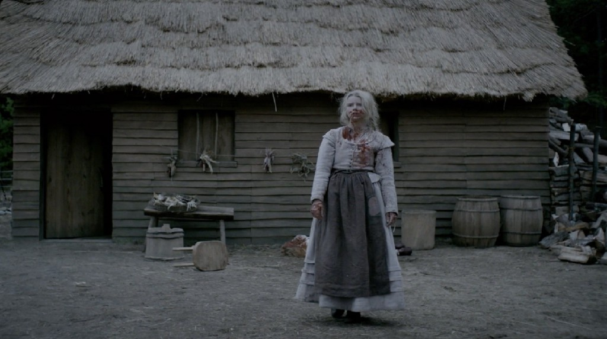
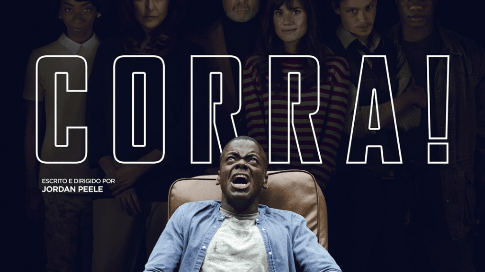
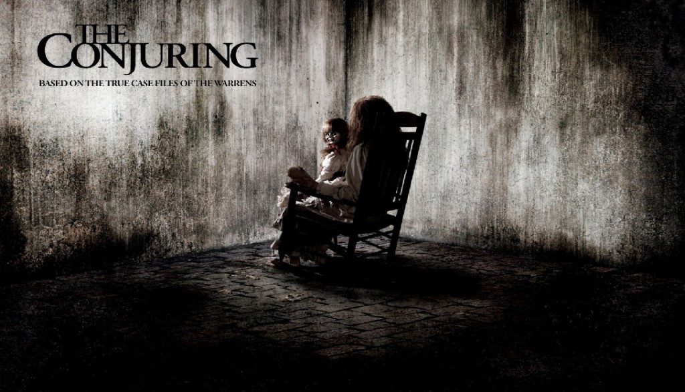
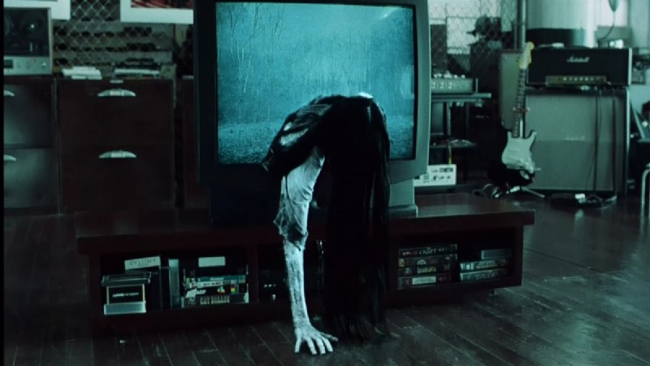

Em décimo lugar, temos um fílme estadunidense dirigido por Fede Alvarez e escrito por Alvarez e Rodo Sayagues, o filme é estrelado por Jane Levy, Dylan Minnette, Daniel Zovatto e Stephen Lang e concentra-se em três amigos que ficam presos dentro da casa de um homem cego durante uma tentativa de assalto.
Em Nano Colocado, temos um filme que traz a história de uma mulher e seu filho atormentados por uma presença maligna. Além de ser uma entidade assustadora, o vilão ainda sabe criar um terror psicológico individual, fazendo com que suas vítimas precisem enfrentar seus próprios medos internos.
Em oitavo temos um filme sinistro que conta história de um autor de romances criminais que encontra uma caixa com filmagens antigas de crimes horripilantes, que parecem ter sido cometidos por um assassino em série. Ao investigar, ele e sua família se tornam alvos de uma entidade sobrenatural maligna.
Em sétimo temos Cinco O Segredo da Cabana, o filme narrar a história de 5 amigos vão passar um feriado em uma cabana nas montanhas. Lá descobrem um diário antigo no porão, que começam a ler. Aos poucos eles acreditam estar cercados pelo sobrenatural, mas em breve vão entender que há muito mais acontecendo.Os diretores conseguiram atualizar o gênero para a galera dos anos 2000. O final, com todos os vilões dos filmes de terror reunidos, é algo difícil de ser esquecido.
Os famosos demonologistas Lorraine e Ed Warren viajam ao norte de Londres. Lá eles ajudam uma mãe solteira que cria quatro filhos sozinha em uma casa atormentada por espíritos malignos.
A Coreia do Sul decreta estado de emergência após um vírus desconhecido tomar conta do país. Algumas pessoas tentam fugir de zumbis e ficam presas em um trem-bala que está a caminho de Busan, a única cidade que não foi afetada pelo vírus. porém esse Filme é considerado um bosta pela famosa crítica
Em uma fazenda no século 17, uma histeria religiosa toma conta de uma família que acusa a filha mais velha pelo desaparecimento do seu irmão ainda bebê.
Chris (Daniel Kaluuya) é jovem negro que está prestes a conhecer a família de sua namorada caucasiana Rose (Allison Williams). A princípio, ele acredita que o comportamento excessivamente amoroso por parte da família dela é uma tentativa de lidar com o relacionamento de Rose com um rapaz negro, mas, com o tempo, Chris percebe que a família esconde algo muito mais perturbador.
Os investigadores paranormais Ed e Lorraine Warren trabalham para ajudar a família aterrorizada por uma entidade demoníaca em sua fazenda.
Em primeiro colocado temos um filme de terror misturado com um suspense psicológico. O filme conta a história de uma jornalista Rachel Keller que decide investigar a morte de sua sobrinha e descobre que quatro adolescentes morreram misteriosamente sete dias depois de assistir a um vídeo com imagens assustadoras. Agora ela tenta solucionar o mistério e impedir que a profecia se realize, já que ela e seu filho também assistiram ao vídeo.
